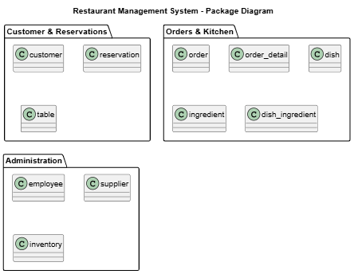
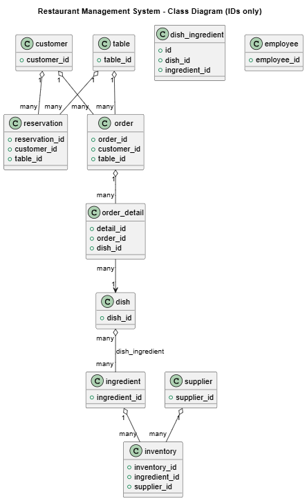
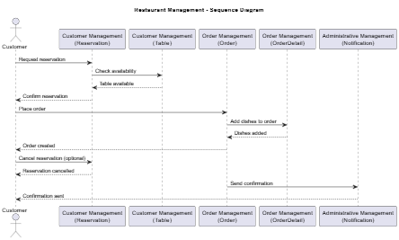
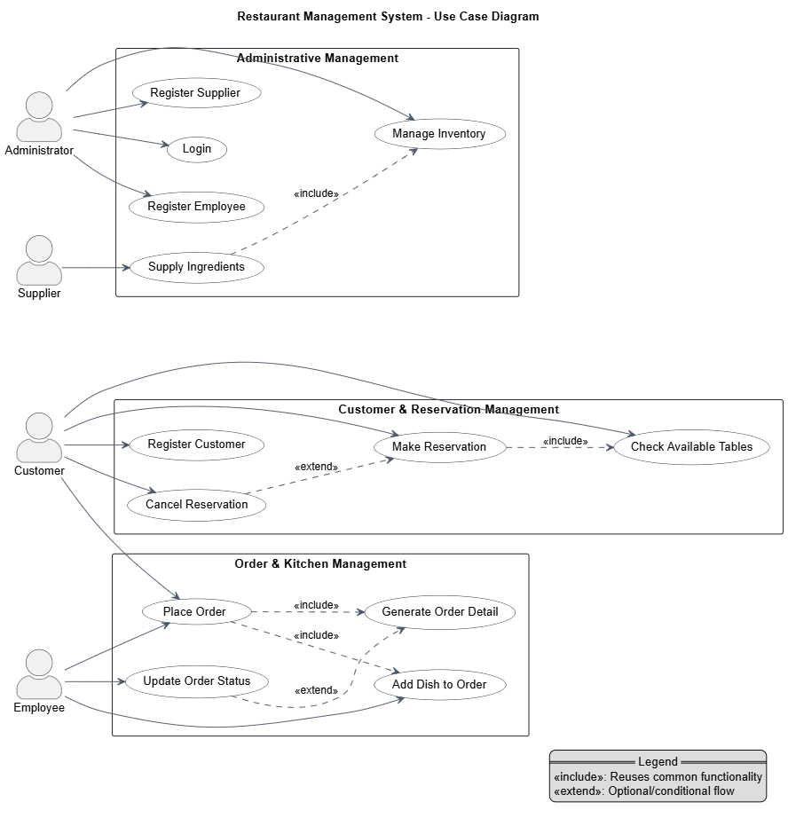

Este sistema gestiona todas las operaciones relacionadas con restaurantes: desde la gestión de clientes y reservas hasta pedidos, cocina e inventario. Incluye módulos para cliente & reservas, pedidos & cocina y administración.

@startuml
title Restaurant Management System – Package Diagram
package "Cliente & Reservas" {
class cliente
class mesa
class reserva
}
package "Pedidos & Cocina" {
class pedido
class detalle_pedido
class plato
class ingrediente
class plato_ingrediente
}
package "Administración" {
class empleado
class proveedor
class inventario
}
@enduml

@startuml
title Restaurant Management System – Class Diagram
class cliente {
+ id
+ first_name
+ last_name
+ phone
+ email
+ address
+ birth_date
}
class mesa {
+ id
+ code
+ capacity
+ location
}
class reserva {
+ id
+ code
+ cliente_id
+ mesa_id
+ reservation_date
+ reservation_time
+ number_of_people
+ special_request
}
class pedido {
+ id
+ code
+ cliente_id
+ mesa_id
+ order_date
+ status
+ total
}
class detalle_pedido {
+ id
+ pedido_id
+ plato_id
+ quantity
+ price
}
class plato {
+ id
+ code
+ name
+ description
+ price
+ preparation_time
}
class ingrediente {
+ id
+ code
+ name
+ unit
+ stock
+ min_stock
+ max_stock
}
class plato_ingrediente {
+ id
+ plato_id
+ ingrediente_id
+ quantity_required
}
class empleado {
+ id
+ first_name
+ last_name
+ document_number
+ role
+ phone
+ email
+ hire_date
+ salary
}
class proveedor {
+ id
+ name
+ contact_name
+ phone
+ email
+ address
}
class inventario {
+ id
+ ingrediente_id
+ current_stock
+ last_updated
}
' Relationships
cliente "1" -- "many" reserva
mesa "1" -- "many" reserva
cliente "1" -- "many" pedido
mesa "1" -- "many" pedido
pedido "1" -- "many" detalle_pedido
plato "1" -- "many" detalle_pedido
plato "1" -- "many" plato_ingrediente
ingrediente "1" -- "many" plato_ingrediente
ingrediente "1" -- "many" inventario
@enduml

@startuml
title Restaurant Order Process – Sequence Diagram
actor Cliente
participant "Administrador" as Admin
participant "Pedido" as Pedido
participant "Cocina" as Cocina
participant "Inventario" as Inventario
Cliente -> Admin : Solicitar reserva
Admin -> Reserva : Crear reserva
Reserva --> Admin : Reserva confirmada
Admin --> Cliente : Confirmación de reserva
Cliente -> Admin : Hacer pedido
Admin -> Pedido : Crear pedido
Pedido -> Inventario : Verificar stock
Inventario --> Pedido : Stock disponible
Pedido -> Cocina : Enviar a preparación
Cocina --> Pedido : Pedido listo
Pedido --> Admin : Pedido completado
Admin --> Cliente : Entregar pedido
@enduml

@startuml
left to right direction
skinparam packageStyle rectangle
skinparam usecase {
BackgroundColor White
BorderColor #1f2937
ArrowColor #4b5563
}
skinparam ActorStyle awesome
title Restaurant Management System – Use Case Diagram
actor "Cliente" as Cliente
actor "Administrador" as Admin
package "Cliente & Reservas" {
(Reservar Mesa) as UC_Reserva
(Consultar Reserva) as UC_Consulta
}
package "Pedidos & Cocina" {
(Hacer Pedido) as UC_Pedido
(Preparar Plato) as UC_Preparar
(Controlar Stock) as UC_Stock
}
package "Administración" {
(Gestionar Empleados) as UC_Empleados
(Gestionar Proveedores) as UC_Proveedores
(Actualizar Inventario) as UC_Inventario
}
Cliente --> UC_Reserva
Cliente --> UC_Consulta
Cliente --> UC_Pedido
Admin --> UC_Preparar
Admin --> UC_Stock
Admin --> UC_Empleados
Admin --> UC_Proveedores
Admin --> UC_Inventario
@enduml
| Fase | Historias de Usuario | Estimación (hrs) | Avance (%) |
|---|---|---|---|
| Phase 1 |
| ||
| Phase 2 |
| ||
| Phase 3 |
|